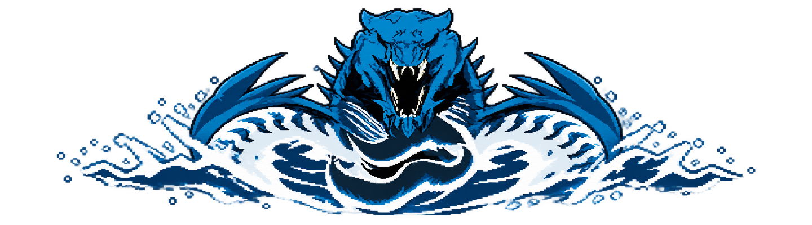

YOUR THREADS
Tracked threads
See who most recently reblogged each saved post.

Titles are formatted as w/ partner | story name.
For a post ID, use the blog that published that specific post. Tumblr checks access before it is saved.
Chooses from all matching threads and opens the latest reblog in a new tab, or the saved post if no reblog link is available.
Tick a thread when completed; select its star to mark it as a favourite. Threads sharing a writing partner are highlighted.
| AU | | | | Actions |
|---|
The latest reblog can be from any branch, not necessarily your roleplay partner.